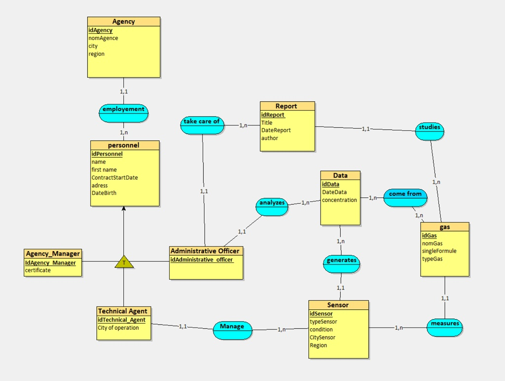

Projet CLEARDATA
Pour un air plus pur, une donnée plus claire.
CLEARDATA est une solution innovante de surveillance de la qualité de l'air. Le projet consiste à collecter des données environnementales (température, humidité, gaz polluants) via des capteurs pour les analyser et les afficher de manière simplifiée.
- Base de données : Configuration individuelle de chaque Routeur (routage IPv6) et de chaque Switch (VLANs).
- Section Analyse : Réalisation du MCD (Modèle Conceptuel de Données) pour structurer les entités : Capteurs, Localisations et Mesures de pollution.
- Section Données : Génération d'un jeu de fausses données (Mock Data) pour simuler des relevés de CO2 et de particules fines sur plusieurs mois afin de tester la robustesse des requêtes.
- Section Diagrammes : Utilisation de diagrammes UML/Entité-Association pour visualiser les relations (Un capteur transmet plusieurs mesures).
I. Contexte
Le Ministère français et ClearData collaborent à la création d'une base de données SQL centralisée afin de remplacer les fichiers Excel actuellement utilisés par les agences régionales. Ce nouveau système permet de suivre avec précision la qualité de l'air, la gestion du personnel et le parc de capteurs, tout en garantissant un meilleur reporting et une conformité totale avec le RGPD (Règlement Général sur la Protection des Données).
II. Modèle conceptuel de données

Configurations Techniques :
- 1. Le cœur du système : Les Mesures (Measurement) C'est la table la plus importante. Elle enregistre ce qu'il se passe dans l'air. Ses propriétés : La valeur (la pollution), l'unité (ex: µg/m³), et surtout le Timestamp (date et heure précise). La relation : Une mesure est forcément envoyée par un capteur (Sensor).
- 2. Le matériel : Les Capteurs (Sensor) C'est le pont entre le monde réel et ta base. Ses propriétés : Le nom du capteur et son modèle. Les relations : Il appartient à une Région spécifique (ex: Île-de-France). Il est géré par un membre de l'équipe (Staff).
- 3. La structure : Les Régions (Region) C'est ce qui remplace les vieux fichiers Excel éparpillés. Rôle : On centralise les données par zone géographique. Une région peut avoir plusieurs capteurs, mais un capteur n'est que dans une seule région.
- 4. L'humain et la sécurité : Le Personnel (Staff) C'est ici qu'intervient le RGPD dont on parlait. Rôle : On stocke qui travaille sur quel capteur. Sécurité : On voit des champs comme Password et Email. C'est l'aspect "authentification" de ton projet.
III. Conception de la Base de Données
Pour assurer l'intégrité et la cohérence des informations, nous avons établi un dictionnaire de données rigoureux définissant chaque entité du système :
- Agence : Représente les points physiques de l'organisation. Elle contient les informations de localisation (adresse, ville, région) et sa date de création.
- Personnel : Regroupe tous les collaborateurs. Chaque fiche précise le rôle (technique, administratif, chef) et gère les dates de contrat pour le suivi RH.
- Capteur : C'est l'élément technique central. On y définit le type de technologie utilisée, la date d'installation et son état actuel (en service, maintenance, etc.).
- Gaz : Identifie précisément les substances surveillées (méthane, ozone, CO2). On y stocke la formule chimique et le type de gaz (GES).
- Données : Table de stockage des relevés. Elle fait le lien entre un capteur et un gaz pour enregistrer une concentration précise à un instant T.
- Rapport : Document de synthèse rédigé par le personnel, incluant un titre, un résumé et une conclusion basés sur les analyses.

IV. Réalisation d'Arbres Algébriques
Pour optimiser et structurer les requêtes de notre base de données, nous avons modélisé deux arbres algébriques. Ces schémas représentent la logique de sélection et de projection des données que nous souhaitons intégrer au système :
- Arbre n°1 (Requête Agence) : Ce premier arbre illustre la récupération spécifique du nom d'une agence à partir de l'entité globale, permettant une lecture rapide des points physiques.
- Arbre n°2 (Requête Personnel) : Plus complexe, cet arbre effectue une double sélection. Il filtre le personnel par identifiant d'agence (id agence = 10) et par poste (agent technique) avant de projeter l'identité des collaborateurs.
Arbre Algébrique n°1

Arbre Algébrique n°2

V. Migration vers une Base de Données Relationnelle
Afin de pouvoir exécuter des requêtes complexes et assurer la pérennité de nos données, nous avons procédé à la migration de notre inventaire. Nous avons converti l'intégralité de la base de données initialement stockée sur Excel vers un format SQL structuré :
- Base Excel (Source) : Centralisation initiale des relevés (capteurs, villes, gaz, ppm) sous forme de tableur, idéale pour la saisie manuelle mais limitée pour l'automatisation.
- Base SQL (Cible) : Transformation en scripts DDL (Data Definition Language) avec création de tables, définitions de clés primaires/étrangères et insertion automatique des données pour permettre le requêtage dynamique.
1. Base de données Excel

2. Conversion SQL (Scripts)

VI. Implémentation des Requêtes SQL
Une fois la structure logique définie par nos arbres algébriques, nous avons traduit ces modèles en requêtes SQL concrètes afin d'interroger notre base de données. Voici l'application pour la gestion des agences :
Requête 1 : Liste exhaustive des agences
Cette requête permet d'extraire le nom de l'ensemble des agences enregistrées dans le système. C'est l'application directe de notre premier arbre algébrique.
SELECT nomAgence FROM agence;
Résultat obtenu : Le système retourne une liste propre et structurée (ex: ClearData Aura, ClearData Bretagne, etc.), confirmant que la base de données répond correctement aux instructions DQL (Data Query Language).
Capture du code et du résultat

VII. Requêtes SQL Avancées
Après avoir conçu les arbres algébriques, nous avons implémenté les requêtes en SQL. Voici l'application concrète pour le filtrage du personnel :
Requête 2 : Liste du personnel technique de l'agence de Bordeaux
Cette requête traduit notre second arbre algébrique. Elle permet d'extraire précisément les noms et prénoms des collaborateurs rattachés à une agence spécifique tout en filtrant par type de poste.
SELECT pe.nom, pe.prenom
FROM personnel pe
WHERE pe.idAgence = 10 AND pe.poste = 'agent technique';
Analyse technique : L'utilisation des clauses WHERE combinées avec l'opérateur AND permet de cibler des données très précises. Le résultat affiche uniquement les agents techniques de l'agence n°10 (Bordeaux), démontrant l'efficacité du système de tri mis en place.
Capture du code et du résultat (Filtre Personnel)

VIII. Peuplement et Sources des Données
Pour rendre notre simulation réaliste et fonctionnelle, nous avons alimenté notre base de données en combinant plusieurs sources d'informations complémentaires :
- Open Data Gouvernemental (Data.gouv) : Utilisation de données réelles pour les localisations géographiques et les référentiels de gaz, garantissant la cohérence scientifique du projet.
- Données de Consigne (Exemple.xls) : Intégration des données initiales fournies dans le cahier des charges pour respecter les contraintes métier du projet.
- Génération par Intelligence Artificielle (ChatGPT) : Utilisation de l'IA pour générer un volume important de données fictives (noms du personnel, adresses, dates de contrats) afin de tester la robustesse de la base et la performance des requêtes.
Synthèse des sources et aperçu des données générées

Conclusion du Projet
La réalisation du projet CLEARDATA a été une étape clé dans ma formation d'ingénieur en cybersécurité. Ce travail m'a permis de lier des concepts théoriques complexes à des applications techniques concrètes.
Compétences acquises :
- Maîtrise de la donnée : Capacité à structurer un dictionnaire de données et à migrer des informations d'un format bureautique (Excel) vers un environnement relationnel (SQL).
- Logique algorithmique : Modélisation de requêtes via des arbres algébriques pour optimiser les performances de recherche.
- Adaptabilité technologique : Utilisation d'outils d'IA générative pour créer des jeux de tests et exploitation de données ouvertes (Open Data) gouvernementales.
- Vision globale : Compréhension de l'interdépendance entre l'infrastructure réseau et la gestion des bases de données.
"Ce projet démontre ma capacité à gérer un flux de données complet, de sa modélisation abstraite jusqu'à son exploitation technique sécurisée."